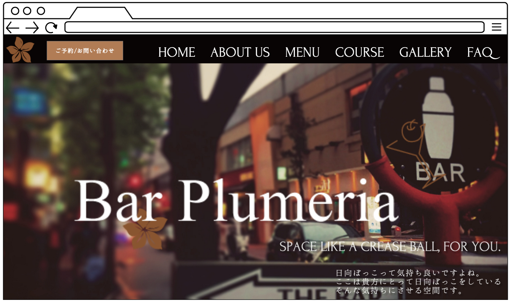
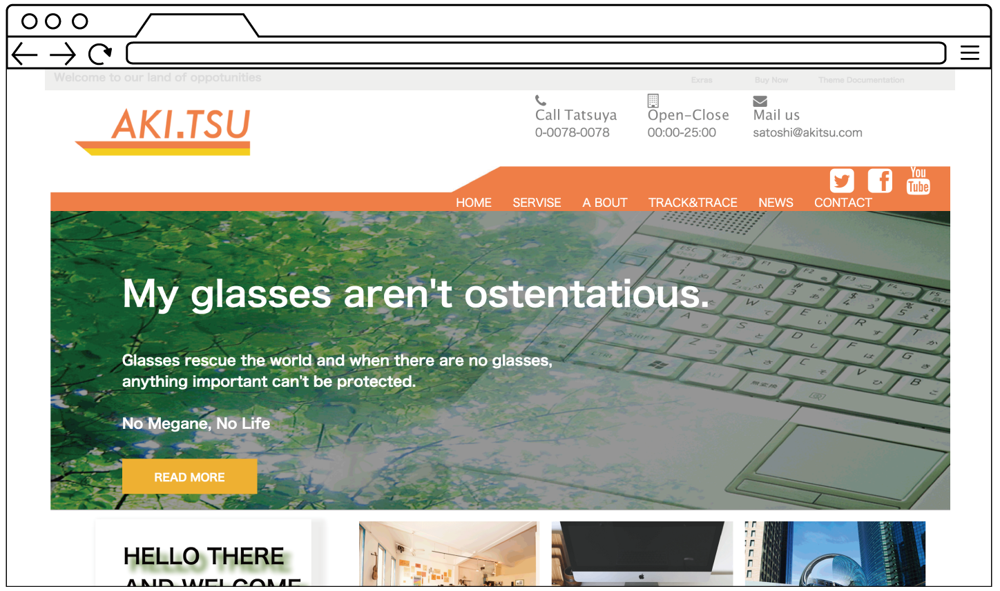

- Astronomical Observation
- 23h
- I imagine a club of NPO which makes
observations and produce as a home page of the group.
The consciousness was made the thing
which uses jQuery and makes
them reduce a blog sense by the thing which makes a movement last.
This site is responsive site.

- Plumeria
- 18h
- In Roppongi, chic bars
for adults are imagined and produced a little.
I produce beautifully using the visual effect and
picture processing using the whole screen.
You can have also thrust at a story with the parallax effect.

- Glass press
- 15h
- I produce in a group work in the school.
I produce as an original site by making reference to
a sample site.
A SNS operating company is assumed and produced.
The whole adjustment and part coding charge.